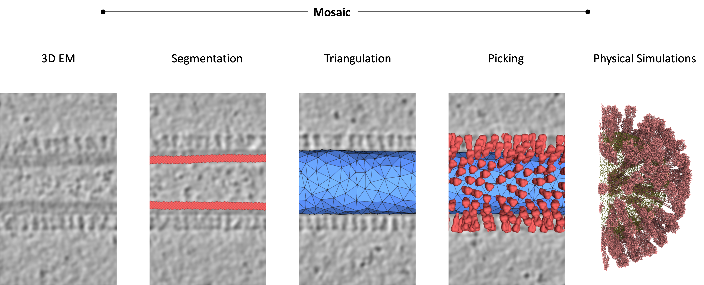
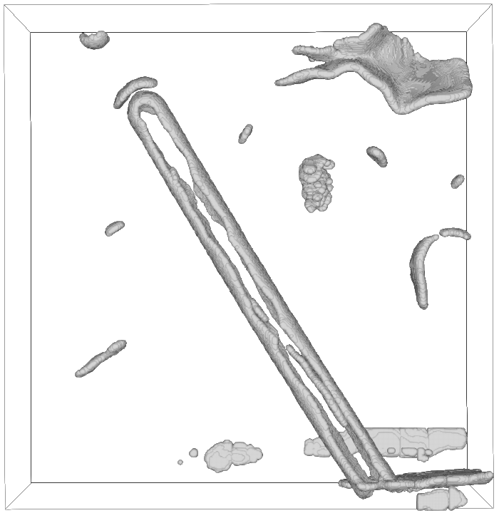
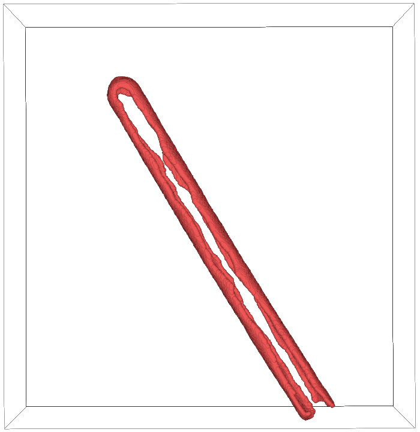
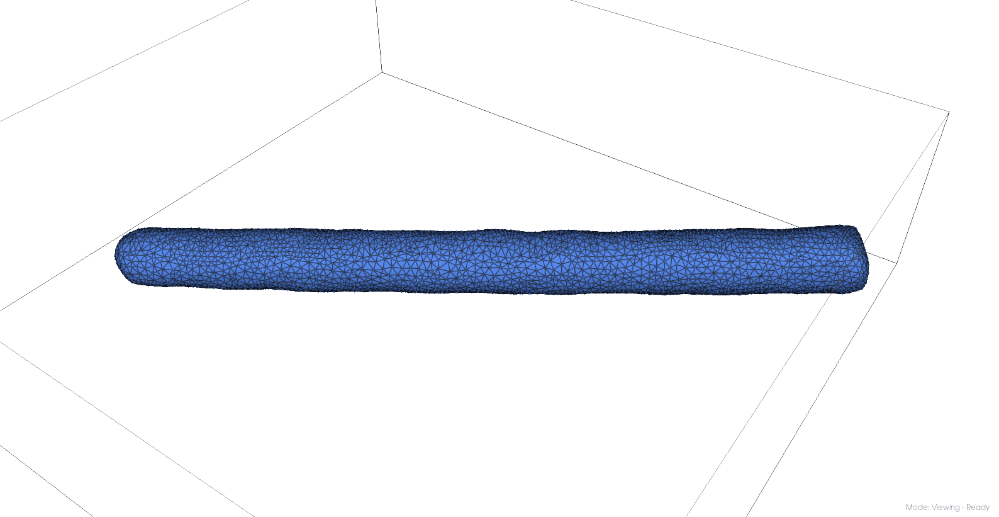
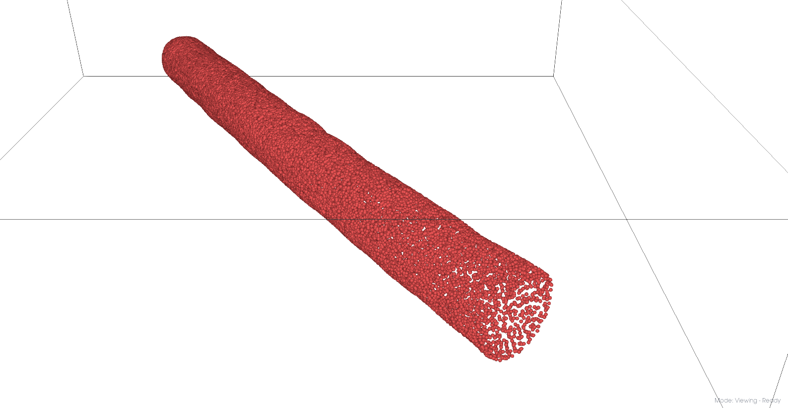
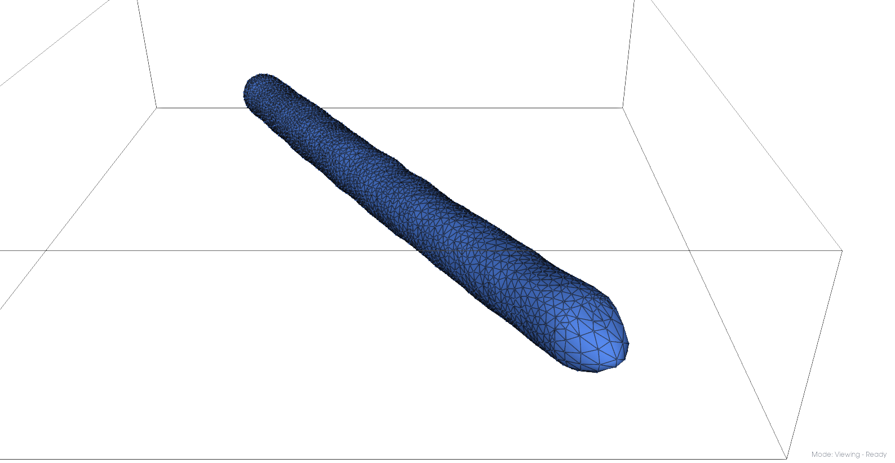
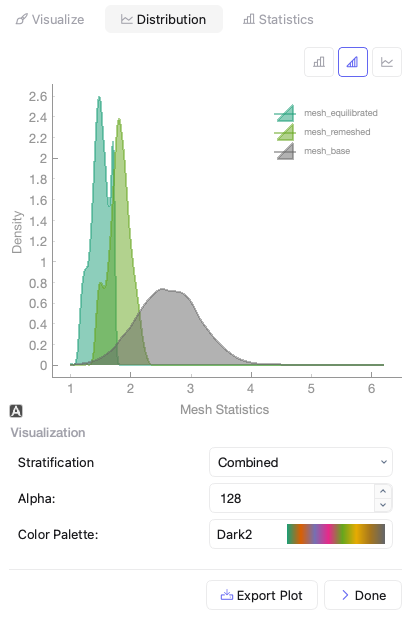
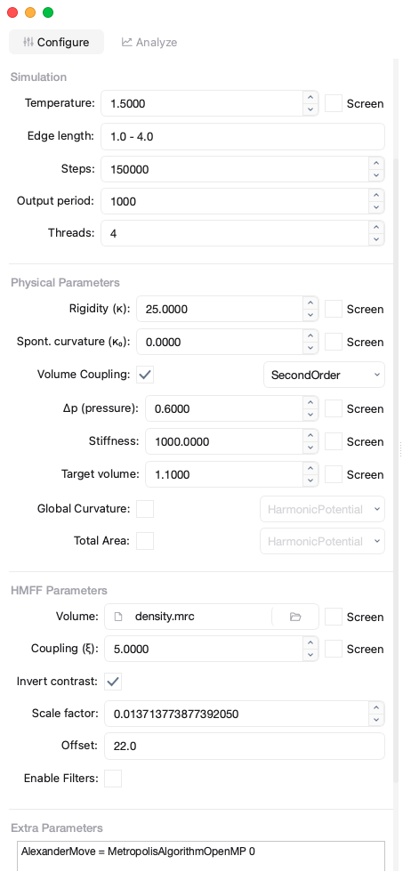
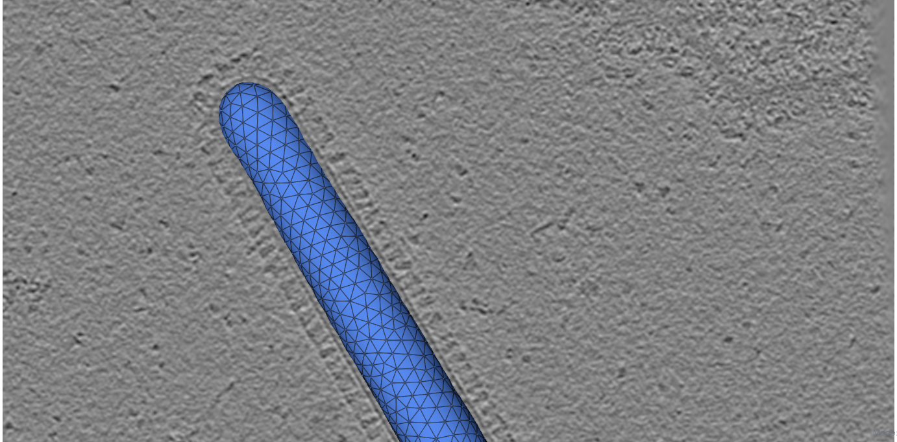
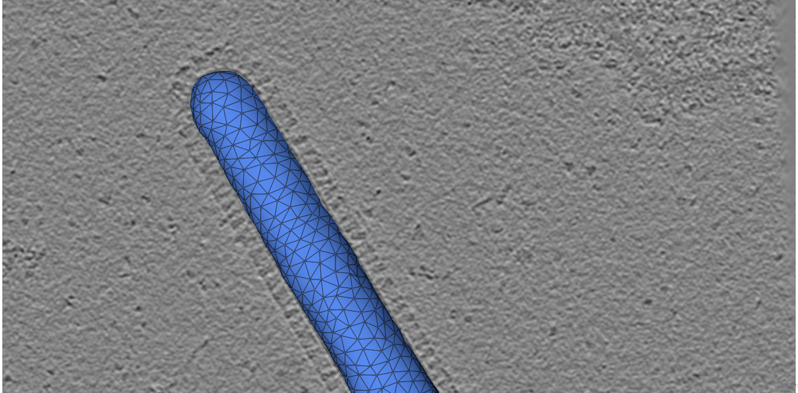

Influenza A Virus#
This tutorial walks through analyzing Influenza A Virus (IAV) virus-like particles (VLPs), from membrane segmentation to coarse-grained Martini models.
{kind=link}

Coming up#
Requirements#
Install Mosaic per the installation instructions. For HMFF, install the DTS Simulations dependencies. For backmapping, install the DTS Backmapping tools.
Note
Segmentation, template matching, and CG equilibration require a GPU. Pre-computed intermediates are available from ownCloud.
Download the IAV VLP tomogram [1] from EMDB-11075:
wget https://ftp.ebi.ac.uk/pub/databases/emdb/structures/EMD-11075/map/emd_11075.map.gz
gunzip emd_11075.map.gz && mv emd_11075.map emd_11075.mrc
For segmentation, download the MemBrain_seg_v10_alpha weights [2] from Google Drive.
Visual Demonstration#
Membrane Segmentation#
In the Intelligence tab, click the arrow next to Membrane and configure:
Model: select the downloaded checkpoint file
Window Size: 160, Output Sampling: 12.0
Clustering: Enabled, Augmentation: Enabled
Click Apply and select the IAV VLP tomogram upon completion.
Note
Without a GPU, use the segmentation from ownCloud and load via File > Open.
Mesh Creation#
Clean the Segmentation#
In the Segmentation tab, select the Cluster section in the Object Browser
Click Select from Base operations and use the threshold slider to isolate the central IAV VLP
Close the selection window and press delete to remove small artifact clusters
Press r to activate the crosshair selector, then click-drag to select incorrectly segmented voxels near the tomogram edge. Press delete to remove them.
Select the VLP in the Object Browser:
In the Segmentation tab, click the arrow next to Skeletonize and choose outer_hull, click Apply
Select the result, click Downsample, choose Center of Mass with Radius: 48, click Apply
Changed in version v1.1.0: Thin was renamed to Skeletonize. The outer method was replaced by outer_hull.

Before cleanup

After cleanup
Generate Initial Mesh#
In the Parametrization tab, select the cleaned segmentation
Click the arrow next to Mesh and configure:
Method: Ball Pivoting
Smoothness: 1.0, Curvature Weight: 1.0, Pressure: 0.0
Boundary Ring: 0, Radii: 60.0, Hole Size: Auto, Edge Length: 36
Edge Length controls the resolution of the output mesh. A value of -1 (Auto) defaults to the input point spacing, in this case 48 Å from the previous downsampling step. Lowering the value produces smoother meshes at the cost of longer computation times.
Changed in version v1.2.1: Elastic Weight renamed to Smoothness. Volume Weight renamed to Pressure. Neighbors, Downsample, and Smoothing Steps were removed. Edge Length did not exist. Sensible parameters are Elastic Weight: 1.0, Curvature Weight: 10.0
Click Apply. Right-click the new mesh in the Object Browser and set Representation to Mesh.
{kind=link}

Initial mesh#
Refine the Mesh#
One cap of the VLP falls outside the tomogram. We resample and re-mesh to fill it:
Select the mesh, click Sample (Method: Points, 30000)
Select the sampled points, Mesh with the same settings, except Pressure 50
Changed in version v1.2.1: Volume Weight was renamed to Pressure. Use Volume Weight: 0.005 pre 1.2.1.
The filled cap should now extend beyond the original segmentation.

Cleaned mesh points

Pressurized mesh
Equilibrate the Mesh#
Select the refined mesh, go to Intelligence tab, click Equilibrate
Set Average Edge Length: 100, Steps: 5000
This produces three meshes: mesh_base (input), mesh_remeshed (target edge length), and mesh_equilibrated (equilibrated via Trimem [3]). If you want to inspect them, load the output meshes via File > Open.
{kind=link}

Comparison of edge lengths#
An important quality metric is the edge-length distribution of equilibrated meshes. We can assess that using Segmentation > Properties, Category: Mesh, Property: Mesh Statistics, Type: Edge Length. The best initial mesh for simulation recapitulates the input geometry and has a tight edge length distribution between 1 - sqrt(3). Typically, mesh_equilibrated is the most suitable for subsequent simulation and we will use it for this example as well.
Note
Pre-computed meshes are available from ownCloud.
HMFF Simulation#
{kind=link}

HMFF simulation setup#
Go to the Intelligence tab, click DTS
Set parameters:
Mesh: mesh_equilibrated.q, Output: Up to you
Temperature: 1.5, Edge length: 1.0 - 4.0, Steps: 150000, Threads: 8
Rigidity (κ): 25.0, VolumeCoupling: SecondOrder 0.6 1000 1.1
HMFF weight (ξ): 5.0, Enable Filters: 50Å, Highpass: 900Å
Extra Parameters: AlexanderMove = MetropolisAlgorithmOpenMP 0
Click Setup to generate the DTS directory
The edge length parameter is related to mesh quality, and FreeDTS will inform you if any edges fall outside this range. The ideal range is 1.0 - 3.0, but upper bounds of 5.0 can still yield stable simulations. Beyond that input mesh quality should be improved. When using meshes created without the Equilibrate functionality, you need to set HMFF scale and offset parameter yourself (see mosaic.meshing.hmff equilibrate_fit for how we compute them).
After the background job has completed, navigate to your chosen output directory and from within run_1 execute:
bash run.sh
Note
Simulation outputs are available on ownCloud in hmff/TrajTSI_Done.
To load results, move to the Analyze tab within the DTS dialog, set the path to what you chose for Output in the Configure page, and load the import button in the actions field of the corresponding run.
Changed in version v1.2.4: Use the Setup dialog pre 1.2.4. The parameters remain the same, but you will have to adapt the AlexanderMove and VolumeCoupling parameters in the corresponding input.dts file manually.
Pre 1.2.4, trajectories had to be imported exclusively using the Trajectory button in the Intelligence tab using the scale parameters from the input.dts, in this case Scale: 0.012202743213335199 and Offset: 21.0,6.0,16.0. Its recommended to use the DTS dialog import, as this will include a range of properties for subsequent analysis through Segmentation > Properties > Vertex Properties.
Use View > Trajectory player to navigate time points and View > Volume Viewer to overlay the density.

Initial mesh

HMFF-refined mesh
Note
Frozen vertices indicate the simulation cannot develop them. Try increasing Min_Max_Lenghts or lowering the equilibration edge length.
Constrained Template Matching#
Generate Seed Points#
Select your desired trajectory time-point, right-click and Duplicate
In Parametrization, configure Sample: Method: Distance, Sampling: 40, Offset: 100
This places seed points ~40Å apart with a 100Å offset (roughly the center height of HA/NA). Export as STAR via right-click.
Template Matching#
In the Intelligence tab, click Setup under Template Matching and configure PyTME [5]:
Data: set working directory, paths to EMD-11075 and HA/NA structures
Preprocess: Lowpass: 15, Align Template Axis: z, Flip Template: checked
Matching: Angular Step: 7, Score: FLC, seed points STAR file, Rotational Uncertainty: 15, Translational Uncertainty: (6,6,10) for HA / (6,6,12) for NA, Tilt Range: 60,60, Wedge Axes: 2,0, Defocus: 30000, No Centering: checked
Peak Calling: PeakCallerMaximumFilter, 10000 peaks, Min Distance: 7 (HA) / 10 (NA)
Compute: set cores, memory, backend: cupy
Click OK to generate and run the matching scripts.
Note
Results are available from ownCloud.
Refine Protein Picks#
Keep the top 97% of NA picks by score
Visualize and manually refine picks in Mosaic using the selection tool
Remove HA picks within 7 voxels of NA picks to resolve clashes
Filtering scripts: pytme/filter.py and pytme/resolve_clash.py on ownCloud.
Coarse-Grained Martini Models#
Backmapping#
In Intelligence, click Backmapping, select an output directory
Set target edge length to 20, add HA and NA inclusions
Tip
The output also contains mesh.tsi for equilibrium DTS simulations with protein inclusions.
Coarse Graining#
Edit martinize.sh to add PDB paths for NA_STRUCTURE and HA_STRUCTURE, then:
bash martinize.sh
Note
Protein principal axes must align with z. An example rotation script is available on ownCloud (pytme/templates/rot_structures.py).
Create the coarse-grained system using TS2CG [6]:
bash plm.sh # Create bilayer
bash pcg.sh # Populate with lipids
This produces system.gro for MD simulation or visualization.
Equilibration#
Gromacs [7] settings for Martini [8] equilibration are on ownCloud (ts2cg folder):
bash equilibrate.sh
Energy minimization runs on a laptop. The final equilibration step should run on an HPC cluster (see eq/equilibrate.sbatch).